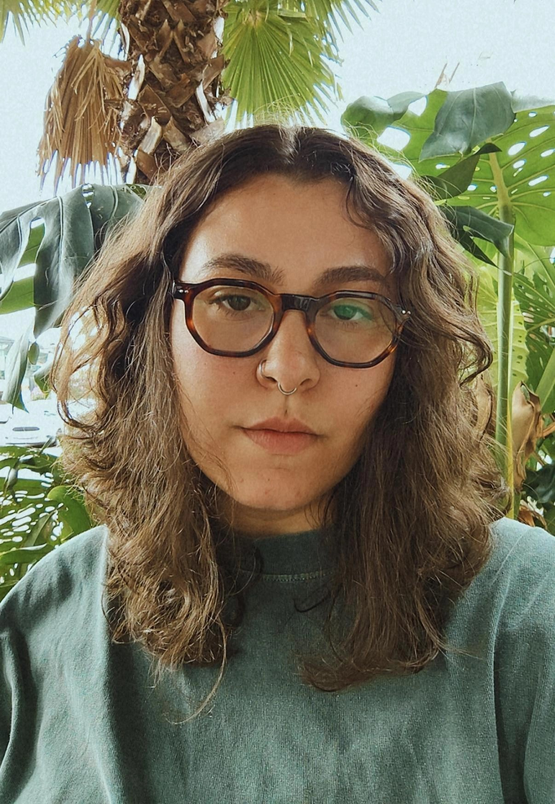

LUME by Lexy
velas artesanais · site e catálogo
A marca do atelier já existia, o site não. Construí do zero e integrei cada aroma à encomenda direta no WhatsApp.
visualizar
velas artesanais · site e catálogo
A marca do atelier já existia, o site não. Construí do zero e integrei cada aroma à encomenda direta no WhatsApp.
visualizar
psicologia clínica · site institucional
O primeiro contato de quem procura terapia. Do acolhimento ao agendamento, defini tom, paleta e hierarquia pensando no paciente.
visualizar
arte contemporânea · concept redesign
Uma galeria reduzida a espaço, luz e obra. Desenhei identidade e navegação em tela cheia para a obra chegar antes do texto.
em breve

Sou a Isabela, designer independente brasileira.
Ajudo marcas e pessoas a construírem presenças digitais intencionais, alinhando sensibilidade estética, clareza e autonomia técnica.
Trabalho de ponta a ponta, do primeiro rascunho ao código no ar. Meu trabalho é movido por curiosidade e vontade constante de simplificar processos, tanto para quem visita o site quanto para quem está construindo o projeto comigo.
Interfaces intencionais e focadas no usuário. Organização de conteúdo, navegação intuitiva e identidade visual aplicadas para criar uma presença memorável.
Transformação da interface em um site de alta performance. Implementação sob medida, código fluido, otimizado para SEO e pronto para conversão.
Acompanhamento pós-lançamento para manter o site atualizado. Ajustes, novas demandas e manutenção com atendimento direto de quem construiu o projeto.
Primeira troca para alinhar expectativas, entender o momento da sua marca e definir o projeto.
Análise de universo visual, público e referências para construir uma base estratégica sólida.
Construção completa da experiência. Do protótipo à implementação técnica de ponta a ponta.
Lançamento oficial da sua presença digital, com autonomia total e suporte para o pós-ar.